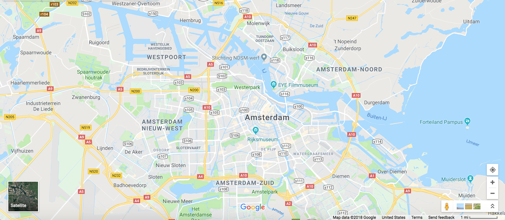

Although I've visited parts of Europe, I've always been intrigued by the Netherlands, specifically Amsterdam

Breathtaking architecture and culture, as well as it being a whole new place to explore, puts Amsterdam squarely on my bucket list
Source: Google Maps